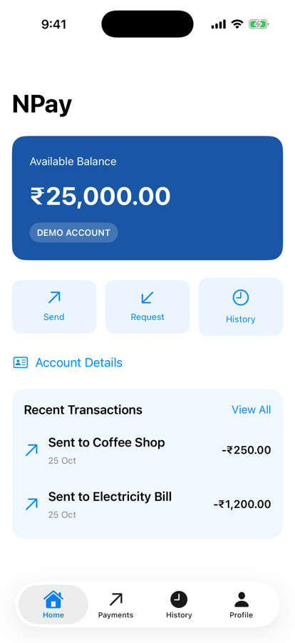
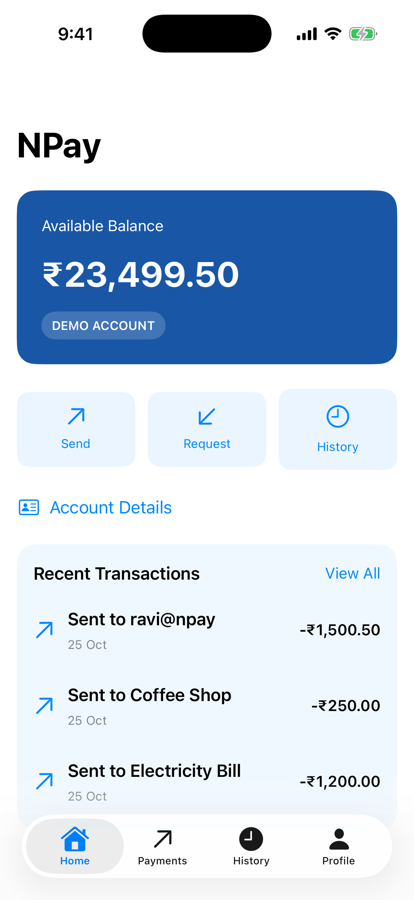
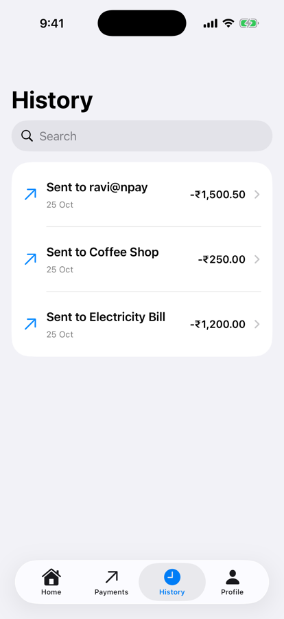

Unit 04 · Lesson 4.10
Complete NPay MVVM
Integration
The same app on the outside; a maintainable, testable architecture inside.
Lesson 4.10 · Outcomes
By the end, you will be able to explain
Describe NPay’s final layers and owners
Derive balance and history from one repository
Trace a payment from form to dashboard
Verify an architecture against acceptance criteria
Compare Unit 3’s design with Unit 4’s
Name the risks that remain before networking
Lesson 4.10 · Where we are
Today: Unit 4, assembled and verified
Unit 04 · Application Architecture & MVVM
Part 1
The final architecture
Same experience, new structure
Part 1 · What we’re building; the final architecture (sections 1–2)
Four layers behind the same screens

NPay, Unit 4
Arrows: code dependencies. Infrastructure implements the domain contract.
Part 1 · Who owns what? (section 2)
Each component has one reason to change
| Component | Responsibility |
|---|---|
| NPayRootView | UI composition |
| NPayRouter | Tabs and navigation |
| NPayDependencies | One repository; builds ViewModels (ours) |
| PaymentViewModel | Payment form and submission state |
| DashboardViewModel | Balance and recent transactions |
| Component | Responsibility |
|---|---|
| SendPaymentUseCase | Payment workflow |
| PaymentPolicy | Illustrative limits |
| AccountRepository | Data-access contract |
| InMemoryAccountRepository | Simulated account state |
| NPayPreferences | Appearance |
Part 1 · Final project structure (section 3)
Folders for people; modules for the compiler
NPay/ (one app module) ├── App/ NPayRootView, NPayRouter, NPayDependencies, │ NPayFactory, NPayPreferences, NPayAccessibilityID ├── Features/ │ ├── Home/ HomeScreen, DashboardViewModel │ ├── Payments/ PaymentsScreen, PaymentViewModel, │ │ PaymentReviewSheet, PaymentSuccessScreen, … │ ├── History/ HistoryScreen, TransactionDetailScreen │ └── Profile/ ProfileScreen, AppearanceSettingsView ├── Domain/ Money, Transaction, PaymentValidator └── DesignSystem/ NPayTheme, NPayButton, NPayCard, … NPayCore/ NPayDomain · NPayData · NPayDomainTests · NPayDataTests NPayAppTests/ ViewModel tests on the app’s own sources
- App, Features, Domain, DesignSystem
- Tests by layer
- Domain and Data types live in NPayCore (4.8)
- Tests sit with their package
- Folders alone don’t create modules
Part 2
One source of truth
Home, History and Payments on one repository
Part 2 · Balance and history from the same repository (sections 2, 11; integration ours)
NPayDependencies owns the repository
@MainActor
final class NPayDependencies {
let repository: any AccountRepository
init() {
repository = InMemoryAccountRepository(
initialBalancePaise: 2_500_000,
transactions: NPayDependencies.demoHistory)
}
func makeDashboardViewModel() -> DashboardViewModel {
DashboardViewModel(repository: repository)
}
func makePaymentViewModel(availableBalance:
@escaping @MainActor () -> Int) -> PaymentViewModel {
NPayFactory.makePaymentViewModel(
repository: repository,
availableBalance: availableBalance)
}
}| Before (4.9) | Now | |
|---|---|---|
| Home | NPayStore | DashboardViewModel |
| History | NPayStore.transactions | DashboardViewModel |
| Payments | adapter over NPayStore (4.6) | the same repository |
| After a payment | Observation on the store | await dashboard.reload() |
- NPayStore and its adapter deleted
- NPayData’s init gains an optional demo history
- Salary Credit dropped: the repository models payments
Part 2 · Refresh after a payment (section 9, question 6)
A failed refresh is not a failed payment
// DashboardViewModel (ours)
var refreshFailed = false
func reload() async {
do {
try await refresh()
refreshFailed = false
} catch {
refreshFailed = true // the payment stays a success
}
}
// PaymentsScreen, after Confirm succeeds
pendingSuccessID = record.id
self.review = nil
await onPaymentRecorded() // { await dashboard.reload() }✔ dashboardShowsThePaymentAfterRefresh()
before reload: 2500000; after: 2349950
✔ failedRefreshKeepsTheLastSnapshot()
refreshFailed true; snapshot untouched
- Preserve the success; report the refresh separately
Part 3
One payment, end to end
₹1,500.50, through every layer
Part 3 · End-to-end payment flow (section 4)
From binding to refreshed dashboard
launch: repository 2,500,000, 2 payments; dashboard the same
1 form ("ravi@npay", "1500.50"); repository unchanged
2–3 sheet: ravi@npay, ₹1,500.50
4–7 repository 2,349,950, 3 payments; sheet dismissed
8 paymentsPath 1, Payment Recorded
9 dashboard 2,349,950, 3; Home ₹23,499.50
Part 3 · What happens at await? (section 5)
Three isolation domains, one call

Review: the command

Home after the payment
let record = try await sendPayment.execute(command)
- ViewModel: main actor
- Use case: async call into the repository
- Repository actor: protects its state
- Back on the main actor: update state
0.8 s in: Processing demo payment..., Confirm disabled
dashboard still 2500000
then: Payment Recorded, dashboard 2349950
Part 4
Verification
The acceptance checklist, run
Part 4 · Unit 4 capstone verification (sections 6, 11)
Every item, checked on the real app
| # | Check | Result (ours) |
|---|---|---|
| 1 | All four tabs launch | ✓ NPay, Payments, History, Profile |
| 2 | NavigationStack, typed routes | ✓ account details; transaction details |
| 3 | Draft survives tab switching | ✓ ravi@npay, 1500.50 |
| 4 | Review shows immutable details | ✓ ravi@npay, ₹1,500.50 |
| 5 | Explicit submission states | ✓ submitting, then success |
| 6 | Use case applies policy | ✓ tests |
| 7 | Repository updates atomically | ✓ tests (concurrent) |
| # | Check | Result (ours) |
|---|---|---|
| 8 | Duplicate submissions rejected | ✓ 2 Confirms → 1 payment |
| 9 | Success after sheet dismissal | ✓ sheet gone, path 1 |
| 10 | Dashboard refreshes | ✓ 2,349,950 = repository |
| 11 | History shows the new row | ✓ first: Sent to ravi@npay |
| 12 | Appearance across tabs | ✓ dark in all four |
| 13 | VoiceOver labels and IDs | ✓ 4 IDs; no unlabelled field |
| 14 | Tests pass | ✓ 3 XCTest + 18 Swift Testing |
Part 4 · The final NPay demonstration (section 11)
₹25,000.00 − ₹1,500.50 = ₹23,499.50
Home

History
2,500,000
− 150,050
= 2,349,950
- Home: balance and recent rows
- History: the full list
- Both from one repository snapshot
NPayCore: 3 XCTest + 12 Swift Testing, coverage 92.23%
NPayAppTests: 6 Swift Testing tests
Part 5
Architecture review
What improved; what remains
Part 5 · What have we improved since Unit 3? (section 7)
Nearly identical screens; a different inside
| Unit 3 | Unit 4 |
|---|---|
| Shared NPayStore handles payment behaviour | PaymentViewModel coordinates the feature |
| Store validates and records payments | Use case defines the workflow |
| In-memory store holds transactions | Repository abstracts account operations |
| Direct concrete dependencies | Constructor injection and protocols |
| UI-driven error handling | An explicit state machine |
| Mostly manual verification | Unit and integration tests |
| Large app target | Feature folders and modules |
PaymentsScreen: 160 → 120 lines (4.2)
Store uses in the screen: 14 → 0
One 1,543-line file → 32 files (4.8)
Tests: 0 → 21
- Easier to test and extend
- Not a different-looking app
Part 5 · Architecture risks still remaining (section 8)
Exactly what later units address
- Relaunch: ₹25,000.00 again (in memory)
- The same request twice: two payments (4.5)
- Cancelled after recording: failure shown (4.7)
- Units 5–8: networking, persistence, security, concurrency
Part 6
Unit 4 complete
Ten lessons, one architecture
Part 6 · Unit 4 learning summary (section 10)
Every lesson is in the running app
| Lesson | Topic | Main NPay concept |
|---|---|---|
| 4.1 | Architecture fundamentals | Separation of concerns |
| 4.2 | MVVM | PaymentViewModel |
| 4.3 | Observation | @Observable, @Bindable |
| 4.4 | Dependency injection | Protocol-based services |
| 4.5 | Repository pattern | Actor-isolated account data |
| 4.6 | Domain models & use cases | SendPaymentUseCase |
| 4.7 | UI state modeling | Explicit payment lifecycle |
| 4.8 | Modular architecture | Feature folders, Swift packages |
| 4.9 | Architecture testing | Unit, async, integration tests |
| 4.10 | Final integration | End-to-end MVVM architecture |
The text notes the consolidated Xcode project as still outstanding; here every lesson’s code was built, run and tested.
Lesson 4.10 · Recap
What to remember
Layers with one reason to change
views, ViewModels, use case, repository
One repository, one truth
Home, History and Payments: 2,349,950
Verified, not assumed
14 checks on the app; 21 tests green
Review
Check your understanding
Check your understanding · 1 of 11
Which component should own SwiftUI layout?
- SendPaymentUseCase
- PaymentsScreen
- AccountRepository
Views lay out; ViewModels and use cases don’t.
Common trap: Leaking layout into logic.
Check your understanding · 2 of 11
Which component should enforce application-level payment policy?
- PaymentViewModel
- SendPaymentUseCase / PaymentPolicy
- NPayRouter
The policy runs before the repository call.
Common trap: Putting rules in the ViewModel.
Check your understanding · 3 of 11
Why should AccountRepository be an abstraction?
- To separate application logic from storage details
- To generate animations
- To replace all tests
In-memory today, API in Unit 5.
Common trap: Coupling the use case to storage.
Check your understanding · 4 of 11
What protects the in-memory balance update from interleaving?
- TextField validation
- TabView
- An actor-isolated, non-suspending operation
Concurrent test: one of two payments recorded.
Common trap: Trusting UI checks.
Check your understanding · 5 of 11
Does actor isolation automatically provide backend idempotency?
The same request twice became two payments.
Common trap: Confusing safety with idempotency.
Check your understanding · 6 of 11
What should happen after a confirmed payment but a failed dashboard refresh?
- Treat the payment as failed
- Preserve success; report the refresh failure separately
- Submit the payment again
Our reload() sets refreshFailed; the payment stays recorded.
Common trap: Retrying a payment that succeeded.
Check your understanding · 7 of 11
Which component should manage navigation paths?
- NPayRouter
- AccountRepository
- PaymentPolicy
paymentsPath held the success route.
Common trap: Navigating from data layers.
Check your understanding · 8 of 11
Why use an immutable payment command for confirmation?
- To improve rendering speed
- To eliminate all concurrency issues
- To submit exactly what the user reviewed
4.6: the command paid 150050, the fields would have paid 200000.
Common trap: Re-reading the form on Confirm.
Check your understanding · 9 of 11
What does dependency injection improve?
- Replaceability and testability
- Automatic database persistence
- Automatic payment security
Mocks in tests; one repository in the app.
Common trap: Expecting DI to add features.
Check your understanding · 10 of 11
Can a domain module depend on SwiftUI?
- It must always import SwiftUI
- It should generally remain independent
- Only when using NavigationStack
NPayDomain imports Foundation only; it built and tested on the Mac.
Common trap: Letting the core depend on the UI.
Check your understanding · 11 of 11
From Lesson 4.9: a planted off-by-one bug left coverage at 92%. What caught it?
- The coverage report
- The at-limit boundary assertion
- Nothing could
Without that test, 11 tests passed.
Common trap: Trusting coverage numbers.
Lesson 4.10 · Where this goes next
Where this goes next
| Lesson | Topic | Builds on today |
|---|---|---|
| 5.1 | How iOS networking works | URLSession, HTTP, DNS, TLS, back into the ViewModel |
| Unit 5 | Networking & REST APIs | an API-backed AccountRepository |
| Unit 6 | Persistence & offline | SwiftData, caching, sync |
| Units 7–12 | Production engineering | auth, security, concurrency, testing, UIKit, CI/CD, capstone |
Lesson 4.10 · Lab
Unit 4 checkpoint
The complete MVVM NPay, verified.
- Create NPayDependencies with one repository.
- Move Home and History onto DashboardViewModel.
- Refresh the dashboard after a successful payment.
- Pay ₹1,500.50; expect ₹23,499.50 everywhere.
- Run the 14-item checklist.
- Run every test; all green.
- Your NPayDependencies and DashboardViewModel
- Your checklist results
- Your test run
Lesson 4.10 complete
Complete NPay MVVM
Integration
Next: Unit 5 · Lesson 5.1 — How iOS Networking Works Behind the Scenes